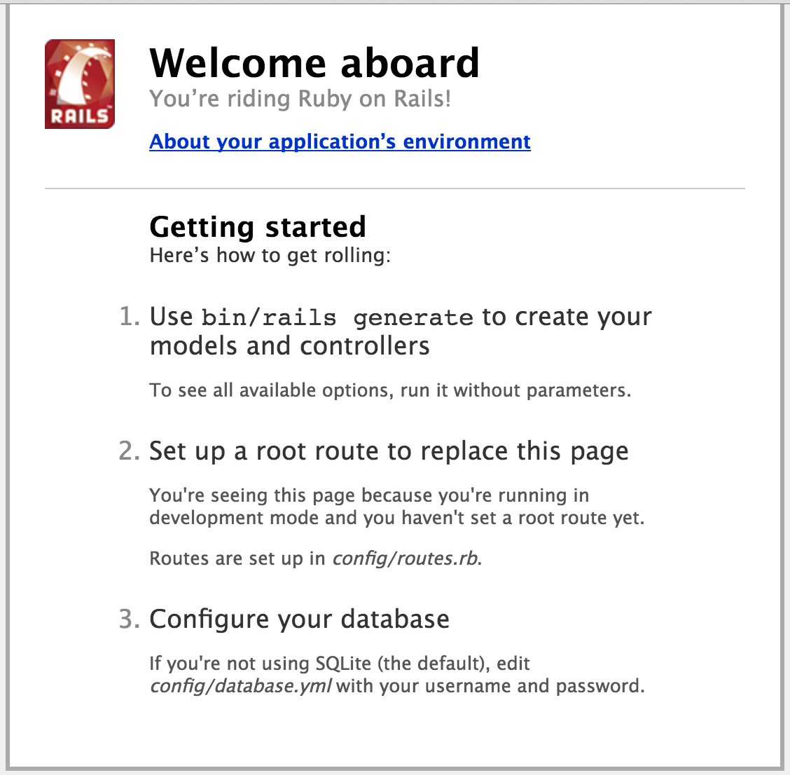

Ruby on Rails Tutorial
If you haven't installed Ruby on Rails on your computer yet, please follow the installation guide to get set up.
Get to know the tools
Text Editor
- Atom, Sublime Text, Vim and Emacs are examples of text editors your can use for writing code and editing files.
Terminal (known as Command Prompt on Windows)
- Where you start the rails server and run commands.
Web browser
- (Chrome, Firefox, Safari) for viewing your application.
Important
It is important that you select the instructions specific to your operating system - the commands you need to run on a Windows computer are slightly different to Mac or Linux. If you’re having trouble check the Operating System switcher at the bottom of the commands. In case you’re using a cloud service (e.g. nitrous), you need to run the Linux commands even if you are on a Windows computer.
1.What is Ruby on Rails?
Ruby on Rails is a web application development framework written in the Ruby language. It is designed to make programming web applications easier by making assumptions about what every developer needs to get started.
2.Creating your first application
In this tutorial you will be creating a Blog application using Ruby on Rails.
First, let’s open a terminal:
- Mac OS X: Open Spotlight, type Terminal and click the Terminal application.
- Windows: Click Start and look for Command Prompt, then click Command Prompt with Ruby on Rails.
- Linux (Ubuntu/Fedora): Search for Terminal on the dash and click Terminal.
- Cloud service (e.g. nitrous): Log in to your account, start your box and switch to its IDE (see installation guide for details). The terminal is usually at the bottom of your browser window.
Next, type these commands in the terminal / command prompt:
mkdir projectsYou can verify that a directory named projects was created by running the list command: ls (osx / unix) / dir (win).
You should see the projects directory in the output. Now you want to change the directory you are currently in to the projects folder by running:
cd projectsYou can verify you are now in an empty directory or folder by again running the ls (osx / unix) / dir (win) command.
In order to create a new Ruby on Rails application called blog type the following:
rails new blogThis will create a new application in the folder blog, so we again want to change the directory to be inside of our rails app by running:
cd blogThe blog directory has a number of auto-generated files and folders that make up the structure of a
Rails application. Most of the work in this tutorial will happen in the app folder
If you run ls (osx / unix) / dir (win) inside of the directory you should see the following folders (among others):
| File/Folder | Purpose |
|---|---|
| app/ | Contains the controllers, models, views, helpers, mailers and assets for your application. You'll focus on this folder for the remainder of this guide. |
| bin/ | Contains the rails script that starts your app and can contain other scripts you use to setup, deploy or run your application. |
| db/ | Contains your current database description (schema), as well as the database migrations. |
| Gemfile Gemfile.lock |
These files allow you to specify what gem dependencies are needed for your Rails application. These files are used by the Bundler gem. |
| public/ | The only folder seen by the world as-is. Contains static files and compiled assets. |
| README.rdoc | This is a brief instruction manual for your application. You should edit this file to tell others what your application does, how to set it up, and so on. |
Start your application:
rails serverOpen http://localhost:3000 in your browser. If you are using a cloud service (e.g. nitrous), use its preview functionality instead (see installation guide for details).
You should see “Welcome aboard” page, which means that the generation of your new app worked correctly.

Notice in this window the command prompt is not visible because you are now in the Rails server, the command prompt looks like this:
$>When the command prompt is not visible you cannot execute new commands. If you try running cd or another command it will not work. To return to the normal command prompt:
Hit Ctrl+C in the terminal to stop the application server.
Coach: Explain what each command does. What was generated? What does the server do?
3.Say "Hello" in Rails
To get Rails saying "Hello", you need to create at minimum a controller and a view.
A controller's purpose is to receive specific requests from the browser to the application, do some calculations,
and then respond in a way or another.
A view's purpose is to display the information that the controller tells it to in a humanly readable format.
An important distinction to make is that it is the controller, not the view, where information is collected.
The view should just display that information.
To create a new controller, you will need to run the "controller" generator and tell it you want a controller called "welcome" with an action called "index", just like this:
rails generate controller welcome indexIf you run ls app/controllers/ (osx / unix) / dir app/controllers/ (win) you should be able to see
a new file called welcome_controller.rb. Run ls app/views/ (osx / unix) / dir app/views/
and you will see a new folder called welcome. This is where the welcome controller's views will be.
Open the app/views/welcome/index.html.erb file in your text editor. Delete all of the existing code in the file,
and replace it with the following single line of code:
<h1>Hello, Rails!</h1>Start your server again with rails server and navigate your browser to
localhost:3000/welcome/index
Coach: Explain routing, the mapping from browser URLs to application controllers and views.
4.Creating Articles
We’re going to use Rails’ scaffolding functionality to generate a starting point that allows us to list, add, remove, edit, and view articles.
Coach: What is Rails scaffolding? (Explain the command, the model name and related database table, naming conventions, attributes and types, etc.) What are migrations and why do you need them?
rails generate scaffold article title:string text:text date:datetimeThe scaffold creates new files in your project directory, but to get it to work properly we need to run a couple of other commands to update our database and restart the server.
rake db:migrate
rails serverruby bin/rake db:migrate
rails serverOpen localhost:3000/articles in your browser. Cloud service (e.g. nitrous) users need to append ‘/articles’ to their preview url instead (see installation guide).
Create a few articles and click around to get familiar with your brand new functional blog application.
Hit Ctrl+C to quit the server again when you’ve clicked around a little.
Coach: Explain what new files have been created with the Article scaffold.
5. Finetune the routes
Open http://localhost:3000 (or your preview url, if you are using a cloud service). It still shows the “Welcome aboard” page. Let’s make it redirect to the articles listing.
Open config/routes.rb and after the first line add:
root to: redirect('/articles')Test the change by opening the root path (that is, http://localhost:3000/ or your preview url) in your browser.
Coach: Talk about routes, and include details on the order of routes and their relation to static files.
6.User Interface (aka. make it pretty)
Coach: Talk about the relationship between HTML and Rails. What part of views is HTML and what is Embedded Ruby (ERB)? What is MVC and how does this relate to it? (Models and controllers are responsible for generating the HTML views.)
The app doesn't look very nice yet. Let’s do something about that. We’ll use the Bootstrap project to give us nicer styling really easily. Bootstrap makes front-end web development faster and easier. It's made for folks of all skill levels, devices of all shapes, and projects of all sizes.
Coach: Explain what layouts are and how they are used by the views in the application.
Open app/views/layouts/application.html.erb in your text editor and above the line:
<%= stylesheet_link_tag "application", media: "all", "data-turbolinks-track" => true %>add
<link rel="stylesheet" href="https://maxcdn.bootstrapcdn.com/bootstrap/3.3.6/css/bootstrap.min.css" integrity="sha384-1q8mTJOASx8j1Au+a5WDVnPi2lkFfwwEAa8hDDdjZlpLegxhjVME1fgjWPGmkzs7" crossorigin="anonymous">and replace
<%= yield %>with
<div class="container">
<%= yield %>
</div>Coach: Bootstrap CSS documentation can be found here: http://getbootstrap.com/css/. Encourage the trainee to play around with new HTML elements, styling, and colours.
Let’s also add a navigation bar and footer to the layout. In the same file, under <body> add
<nav class="navbar navbar-default navbar-fixed-top" role="navigation">
<div class="container">
<div class="navbar-header">
<button type="button" class="navbar-toggle" data-toggle="collapse" data-target=".navbar-collapse">
<span class="sr-only">Toggle navigation</span>
<span class="icon-bar"></span>
<span class="icon-bar"></span>
<span class="icon-bar"></span>
</button>
<a class="navbar-brand" href="/">My Blog</a>
</div>
<div class="collapse navbar-collapse">
<ul class="nav navbar-nav">
<li class="active"><a href="/articles">Articles</a></li>
</ul>
</div>
</div>
</nav>and before </body> add
<footer>
<div class="container">
Rails Girls Vienna 2016
</div>
</footer>
<script src="https://maxcdn.bootstrapcdn.com/bootstrap/3.3.6/js/bootstrap.min.js" integrity="sha384-0mSbJDEHialfmuBBQP6A4Qrprq5OVfW37PRR3j5ELqxss1yVqOtnepnHVP9aJ7xS" crossorigin="anonymous"></script>Now let’s also change the styling of the articles table. Open app/assets/stylesheets/application.css and at the bottom add
body { padding-top: 100px; }
footer { margin-top: 100px; }
table, td, th { vertical-align: middle; border: none; }
th { border-bottom: 1px solid #ddd; }Now make sure you saved your files and refresh the browser to see what was changed. You can also change the HTML & CSS further.
In case your Terminal shows you an error message that sort of implies there is something wrong with your JavaScript or CoffeeScript, install nodejs.
This issue should not appear when you’ve used the RailsInstaller (but when you’ve installed Rails via
gem install rails).
7. Adding comments
It would be cool if people viewing the articles could also comment on them, wouldn't it? For this, we need to add a second model called Comment. Type the following in the Terminal:
rails generate scaffold comment commenter:string body:text article_id:integer
rake db:migrateOpen the newly created app/models/comment.rb file and replace the content with the following code:
class Comment < ActiveRecord::Base
belongs_to :article
end Open the previously created mode, app/models/article.rb and replace the content with the following:
class Article < ActiveRecord::Base
has_many :comments
endCoach: Talk about models, their mapping in the data base, and associations.
Displaying the existing comments on an article, as well as creating new ones can be easily done by adding the following to
app/views/articles/show.html.erb, before the <%= link_to 'Edit', edit_article_path(@article) %> line:
<h3>Comments</h3>
<% @article.comments.each do |comment| %>
<div>
<strong><%= comment.commenter %></strong>
<br />
<p><%= comment.body %></p>
<p><%= link_to 'Delete', comment_path(comment), method: :delete, data: { confirm: 'Are you sure?' } %></p>
</div>
<% end %>
<%= render 'comments/form' %>Open app/controllers/articles_controller.rb, and after the line def show add the following code:
@comment = Comment.new(article: @article)Open app/views/comments/_form.html.erb, and before the line <div class="actions"> add the following code:
<%= f.hidden_field :article_id %>Coach: Explain the model form.
In order for the browser to display the article again after a comment has been created, we need to setup redirection in the
comments controller. To do so, open the app/controllers/comments_controller.rb file, and
instead of the line format.html { redirect_to @comment, notice: 'Comment was successfully created.' } write the following:
format.html { redirect_to @comment.article }Refresh your browser and create comments.
Coach: Talk a bit about redirection in Rails.
8.Adding an image to articles
In some cases you might want to add images to a blog article. In order to do so, we need a new gem to our applications, carrierwave. Remember what gems are?
Coach: Explain what libraries / gems are and why they are useful. Describe what open source software is.
Open Gemfile in the project directory using your text editor and add at the end:
gem 'carrierwave'Hit Ctrl+C in the terminal to quit the server.
In the terminal run:
bundle installNow we can generate the code for handling uploads. In the terminal run:
rails generate uploader ImageIn order for articles to be able to store an image, we also need to add another attribute to the Article model. We do this by creating a migration. Run the following in the terminal:
rails g migration add_image_to_articles image:string
rake db:migrateWe need to tell the articles controller that we are now allowing an image to be attached to an article.
Open app/controllers/articles_controller.rb and instead of the line params.require(:article).permit(:title, :text, :date) type:
params.require(:article).permit(:title, :text, :date, :image)Please start the rails server now.
Note: Some people might be using a second terminal to run the rails server continuously. If so you need to restart the Rails server process now. This is needed for the app to load the added library.
Open app/models/article.rb and under the line
has_many :commentsadd
mount_uploader :image, ImageUploaderOpen app/views/articles/_form.html.erb and before the line <div class="actions"> add the following:
<%= f.file_field :image %>Sometimes, you might get an TypeError: can’t cast ActionDispatch::Http::UploadedFile to string.
If this happens, in file app/views/articles/_form.html.erb change the line
<%= form_for(@article) do |f| %>to
<%= form_for(@article, :html => {:multipart => true}) do |f| %>In your browser, add a new article with an image. Before you can also see the image you need to add some code.
Open app/views/articles/show.html.erb and before <p><strong>Date:</strong>
<%= image_tag(@article.image_url, :width => 600) if @article.image.present? %>Now refresh your browser to see what changed.
9.What next?
- Change your welcome page to display a summary of the latest 5 articles with a link to the next ones.
- Display the number of comments on each article on the article listing page
- Add design using HTML & CSS
- Add authentication
- Use JavaScript to add interaction
- Add picture resizing to make loading the pictures faster
Additional Guides
- Guide 1: Handy cheatsheet for Ruby, Rails, console etc.
- Guide 2: Put your app online with Heroku by Terence Lee / Put your app online with OpenShift by Katie Miller / Put your app online with anynines / Put your app online with Trucker.io
- Guide 3: Create thumbnail images for the uploads by Miha Filej
- Guide 4: Add design using HTML & CSS by Alex Liao
- Guide 5: Add Authentication (user accounts) with Devise by Piotr Steininger
- Guide 6: Adding profile pictures with Gravatar
- Guide 7: Test your app with RSpec
- Guide 8: Continuous Deployment with Travis-CI / Continuous Deployment with Codeship / Continuous Deployment with Snap CI
- Guide 9: Go through additional explanations for the App by Lucy Bain
This guide is based on the official Rails Girls guide created by Vesa Vänskä and the official Ruby on Rails tutorial.